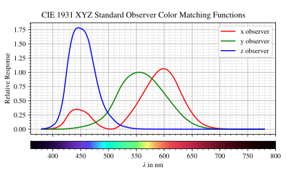

4.5. Spectrum (LightSpectrum, TransmissionSpectrum)#
4.5.1. LightSpectrum#
A LightSpectrum defines emittance or a similar quantity for light output depending on the wavelength. All spectral values need be greater or equal to zero.
LightSpectrum objects are used when creating a RaySource or when we want to render the spectral distribution of light hitting a detector.
4.5.1.1. Creating the Spectrum#
Units
For line spectra (modes "Monochromatic" and "Lines") the spectral unit is W, while for all other modes the spectral power density with unit W/nm.
The actual values and height parameters (val, line_vals, ...) are therefore given in the same unit.
For spectra used in raytracing the absolute height is unimportant, as the function gets rescaled to the correct power by the parent ray source.
Constant
A constant (or uniform) LightSpectrum is defined using:
spec = ot.LightSpectrum("Constant", val=12.3)
Monochromatic
We can also define a spectrum with only a single wavelength:
spec = ot.LightSpectrum("Monochromatic", wl=423.56, val=3)
Lines
Multiple spectral lines are created with mode "Lines".
Argument lines is a list of wavelengths, while line_vals is a list with the same number of elements describing the height/power of each wavelength.
spec = ot.LightSpectrum("Lines", lines=[458, 523, 729.6], line_vals=[0.5, 0.2, 0.1])
Rectangle
A rectangular window is defined with "Rectangle" and lower and upper wavelength bounds.
spec = ot.LightSpectrum("Rectangle", wl0=520, wl1=689, val=0.15)
Gaussian
A gaussian function can be created with "Gaussian", a mean value mu and standard deviation sig, all given in nanometers.
Note that the gaussian function will be truncated to the visible range [380nm, 780nm].
spec = ot.LightSpectrum("Gaussian", mu=478, sig=23.5, val=0.89)
Blackbody Radiator
A blackbody radiator, following Planck’s law, with a specific temperature T in Kelvin is initialized with:
spec = ot.LightSpectrum("Blackbody", T=3890, val=2)
The val parameter defines the peak value in W/nm.
User Function
For the user it is also possible to create an own function with the func parameter. This function must take wavelength array in nm as input and also return a numpy array with the same shape.
spec = ot.LightSpectrum("Function", func=lambda wl: np.arctan(wl - 520)**2)
If a function with multiple parameters is utilized, additional arguments can be put in the func_args parameter dictionary.
spec = ot.LightSpectrum("Function", func=lambda wl, c: np.arctan(wl - c)**2, func_args=dict(c=489))
For discrete datasets the "Data" mode proves useful. In this case the LightSpectrum constructor takes a wavelength array wls and a value array vals, both being the same shape and one dimensional numpy arrays.
wls = np.linspace(450, 600, 100)
vals = np.cos(wls/500)
spec = ot.LightSpectrum("Data", wls=wls, vals=vals)
Note that wls needs to be monotonically increasing with the same step size and needs to be inside the visible range [380nm, 780nm].
Histogram
This spectrum type generally is not user created, but is rendered on a detector or source. It consists of a list of bins and bin values.
4.5.1.2. Getting Spectral Values#
The LightSpectrum object can be called with wavelengths to get the spectral values:
>>> wl = np.linspace(400, 500, 5)
>>> spec(wl)
array([0. , 0. , 0.62160997, 0.58168242, 0.54030231])
4.5.1.3. Wavelength Characteristics#
Function |
Unit |
Meaning |
|---|---|---|
nm |
Wavelength with the spectrum peak |
|
nm |
power-weighted average wavelength |
|
nm |
full width half maximum wavelength range |
|
nm |
wavelength with the same hue as the spectrum
NaN if not existent
|
|
nm |
wavelength with the opposite hue as the spectrum
NaN if not existent
|
As an example we can load the LED B1 standard illuminant, that can also be seen in Fig. 4.19. Then the peak wavelength is calculated with:
>>> spec = ot.presets.light_spectrum.led_b1
>>> spec.peak_wavelength()
605.0022500225002
Note that with multiple same height peaks or a broad constant peak region the first peak value is returned. However, due to numerical precision this is not always the case.
In our example the power-weighted average wavelength (centroid) is different from this:
>>> spec.centroid_wavelength()
592.3958585050702
The dominant wavelength is calculated using:
>>> spec.dominant_wavelength()
584.7508883332902
When dominant or complementary are not existent, as for instance magenta can’t be described by a single wavelength, the values are set to NaN (not a number).
The FWHM can be calculated with:
>>> spec.fwhm()
129.18529185291857
The function calculates the smallest FWHM around the highest peak. Note that for some spectral distributions, for instance multuple gaussians, this function is not suitable, as the FWHM is not meaningful here.
4.5.1.4. Power#
The spectral power in W can be calculated with:
>>> spec.power()
3206.974999684993
And the luminous power in lumens with:
>>> spec.luminous_power()
999886.8629801519
4.5.2. TransmissionSpectrum#
A TransmissionSpectrum is applied as filter function for a Filter element. All transmission values need to be inside the [0, 1] range.
The TransmissionSpectrum provides less modes than the LightSpectrum class. Note that now the scaling factor vall becomes important.
This class defines a new inverse parameter, that subtracts the defined function from a value of one. This has the effect that the function instead does not define the transmittance behavior, but the absorption one. A gaussian bandpass becomes a notch filter, a rectangular bandpass a rectangular blocking one.
Constant
A neutral density filter is defined with mode "Constant" and the linear transmittance value.
spec = ot.TransmissionSpectrum("Constant", val=0.5)
Gaussian
Colored filters (or bandpass filters) are often similar to a Gaussian function.
spec = ot.TransmissionSpectrum("Gaussian", mu=550, sig=30, val=1)
A gaussian notch filter can be defined with inverse=True.
spec = ot.TransmissionSpectrum("Gaussian", mu=550, sig=30, val=1, inverse=True)
Rectangle
A rectangular pass filter can be modelled by a rectangular function.
spec = ot.TransmissionSpectrum("Rectangle", wl0=500, wl1=650, val=0.1)
A rectangular blocking filter can be defined with inverse=True.
spec = ot.TransmissionSpectrum("Rectangle", wl0=500, wl1=650, inverse=True)
An edgepass filter can be created by simply setting one of the bounds to the bound of the visible range.
spec = ot.TransmissionSpectrum("Rectangle", wl0=500, wl1=780)
User Data/Function
Creating a TransmissionSpectrum with discrete data or a user function works exactly like for the LightSpectrum, however all function/data values need to be inside range [0, 1].
Getting Spectral Values
As for the LightSpectrum object we can get the spectral values with:
>>> wl = np.linspace(400, 550, 5)
>>> spec(wl)
array([0., 0., 0., 1., 1.])
4.5.3. Spectrum#
Spectrum is the parent class of both LightSpectrum, TransmissionSpectrum. It defines the following modes: "Monochromatic", "Rectangle", "List", "Function", "Data", "Gaussian", "Constant". Compared to LightSpectrum only modes "Histogram" and "Blackbody" are missing.
Generally the Spectrum class is not used by the user. But for instance the color matching functions ot.presets.spectrum.x, ot.presets.spectrum.y, ot.presets.spectrum.z are objects of this class.
4.5.4. Plotting#
A Spectrum is plotted with the function spectrum_plot from optrace.plots.
It takes a Spectrum, subclasses or a list of them.
import optrace.plots as otp
otp.spectrum_plot(ot.presets.light_spectrum.standard_natural)
The user can provide a user-defined title, turn off/on labels and the legend with legend_off, labels_off and make the plot blocking with block=True.
ot.plots.spectrum_plot(ot.presets.light_spectrum.standard_natural, labels_off=False, title="CIE Standard Illuminants",
legend_off=False, block=False)
Examples for a spectrum plot are found below.
4.5.5. Spectral Lines#
optrace has some spectral wavelength lines defined in its presets.
While there are many such lines, only those relevant for the calculation of the Abbe number are built-in.
More about the Abbe number can be found in Section 6.4.2.2.
Name |
Wavelength
in nm
|
Element |
Color |
|---|---|---|---|
h |
404.6561 |
Hg |
violet |
g |
435.8343 |
Hg |
blue |
F’ |
479.9914 |
Cd |
blue |
F |
486.1327 |
H |
blue |
e |
546.0740 |
Hg |
green |
d |
587.5618 |
He |
yellow |
D |
589.2938 |
Na |
yellow |
C’ |
643.8469 |
Cd |
red |
C |
656.272 |
H |
red |
r |
706.5188 |
He |
red |
A’ |
768.2 |
K |
IR-A |
Due to limitations in python variable names, the presets with a trailing apostrophe are instead named with an trailing underscore, for instance F’ is named F_.
>>> ot.presets.spectral_lines.F_
479.9914
The most common wavelength combinations for Abbe numbers are FdC, FDC, FeC and F’eC’.
>>> ot.presets.spectral_lines.F_eC_
[479.9914, 546.074, 643.8469]
In the next table the dominant wavelengths of the sRGB primaries can be found. The dominant wavelength is the wavelength that produces a color with the same hue as the reference color. The scaling factors are dimensioned such that the sum of these three monochromatic light sources produces sRGB-white.
Name |
Wavelength
in nm
|
Scaling Factor |
|---|---|---|
R |
611.2826 |
0.5745000 |
G |
549.1321 |
0.5985758 |
B |
464.3118 |
0.3895581 |
These wavelengths prove useful when trying to simulate color mixing.
>>> ot.presets.spectral_lines.rgb
[464.3118, 549.1321, 611.2826]
4.5.6. Spectrum Presets#
Below you can find some predefined presets for Spectrum and LightSpectrum.

Fig. 4.17 CIE standard illuminants. Available as ot.presets.light_spectrum.<name> with a, d50, ... as <name>#

Fig. 4.18 CIE standard illuminants LED series. Available as ot.presets.light_spectrum.<name> with led_b1, led_b2, ... as <name>#

Fig. 4.19 CIE standard illuminants Fluorescent series. Available as ot.presets.light_spectrum.<name> with fl2, fl7, ... as <name>#

Fig. 4.20 Possible sRGB primary spectra.
Available as ot.presets.light_spectrum.<name> with srgb_r, srgb_g, ... as <name>#
{kind=link}

Fig. 4.21 CIE color matching functions.
Available as ot.presets.spectrum.<name> with x, y, z as <name>#
Other presets include spectra from spectral lines combination in Section 4.5.5. Namely ot.presets.light_spectrum.<name> with FdC, FDC, FeC, F_eC_ as <name>.